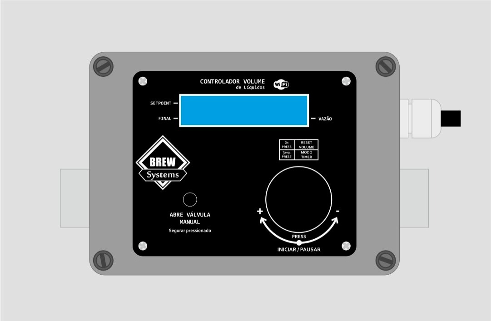
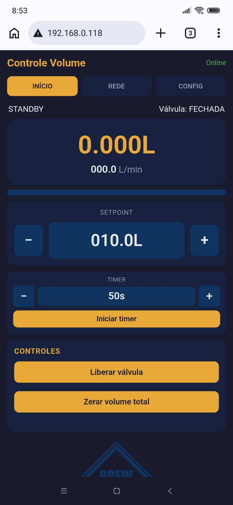

Controle automático de volume de líquidos
BREW Systems · MAZZA
O Litrero é um controlador inteligente de enchimento que mede o volume de líquido em tempo real e comanda a válvula solenoide automaticamente. O equipamento foi projetado para processos que exigem precisão repetível, segurança operacional e facilidade de uso — no painel físico ou pelo celular/computador.

| Vantagem | O que isso significa na prática |
|---|---|
| Medição precisa de volume | O sensor de fluxo integra litros passados com resolução adequada ao setpoint; o enchimento para exatamente no volume programado. |
| Controle automático | Basta definir o volume desejado e iniciar; a válvula abre, monitora a vazão e fecha ao atingir o alvo. |
| Monitoramento de vazão (L/min) | A leitura contínua permite ajustar pressão/bomba ou válvula para manter fluxo estável — essencial para filtros funcionarem de forma efetiva |
| Operação local e remota | Display LCD + encoder no equipamento; interface web no celular com atualização em tempo real. |
| Timer de enchimento | Agende o início automático após um tempo de espera (útil em processos que precisam de repouso antes da inicialização). |
| Proteções de segurança | Watchdogs detectam ausência de fluxo ou enchimento excessivamente longo e fecham a válvula automaticamente. |
| Estatísticas | Contagem de ciclos e litros acumulados para acompanhamento de produção. |
| Atualização sem desmontar | Firmware atualizável via OTA (Over-The-Air) pela interface web. |
Na operação normal, o display mostra:
| Linha | Conteúdo |
|---|---|
| Superior | Setpoint (volume alvo, em litros) · indicador L/min |
| Inferior | Volume atual acumulado · Vazão instantânea (L/min) |
Exemplo conceitual:
20.0L L/min
8.5L 012.3O backlight desliga após 2 minutos sem interação e religa ao girar o encoder ou pressionar botões.
| Gesto | Função |
|---|---|
| Girar | Ajusta o setpoint de volume (em STANDBY, ENCHENDO ou PAUSADO) |
| Clique | Inicia enchimento · Pausa · Retoma · Confirma ações no backend/timer |
| Duplo clique | Entra no modo zerar (setpoint ou volume total piscam) |
| Pressionar 2 s | Entra no menu backend (STANDBY/ERRO) · Sai do timer · Sai do backend |
Passos de ajuste do setpoint (rotação lenta):
| Faixa do setpoint | Incremento por passo |
|---|---|
| < 1 L | 0,01 L |
| 1 L a 5 L | 0,1 L |
| 5 L a 10 L | 0,5 L |
| ≥ 10 L | 1,0 L |
Girar mais rápido aumenta o passo (até 5× o valor base) para ajustes ágeis em volumes grandes.
Pressionar e manter o botão manual abre a válvula em modo manual (sem contagem automática de ciclo completo). Solte para fechar. Útil para purgas, testes ou fluxo contínuo curto.
Em estado de ERRO, pressionar o botão manual também permite limpar o erro e voltar ao STANDBY.
20.0 L). O setpoint deve ser maior que
zero para iniciar.| Ação | Como fazer |
|---|---|
| Pausar | Clique no encoder → estado PAUSADO (válvula fecha) |
| Retomar | Clique novamente → ENCHENDO (se ainda não atingiu o setpoint) |
| Ajustar setpoint | Gire o encoder (possível em ENCHENDO/PAUSADO) |
| Zerar volume acumulado | Duplo clique → selecione setpoint ou total (girar) → clique para zerar · duplo clique cancela |
O timer inicia o enchimento automaticamente após uma contagem regressiva.
Use o bloco Timer na aba INÍCIO (ajustar, iniciar, pausar, cancelar) — ver seção 8.
Acesso: em STANDBY ou ERRO, pressione o encoder por 2 segundos.
| Item | Função |
|---|---|
| CALIB SENSOR | Fator de calibração do sensor YF-S201 (padrão 7,5). Clique entra em edição; gire para ajustar; pressione 2 s para salvar. |
| RESET STATS | Zera ciclos e litros acumulados. Duplo clique → confirmar → clique. |
| RESET WIFI | Apaga rede Wi-Fi salva e reinicia. Duplo clique → confirmar → clique. |
| REBOOT ESP | Reinicia o controlador. Duplo clique → confirmar → clique. |
| ERRO SEM FLUXO | Timeout sem fluxo com válvula aberta (padrão 5 s, 1–60 s). |
| ERRO ENCHIMENTO | Timeout máximo de enchimento (padrão 20 min, 1–120 min). |
Sair do backend: pressione o encoder 2 segundos (fora do modo edição).
Filtros (cartucho, plate, lenticular, etc.) têm faixa de fluxo recomendada. Fluxo muito alto reduz eficiência e pode danificar o elemento filtrante; fluxo muito baixo prolonga o processo e altera o perfil de filtração.
O Litrero exibe L/min em tempo real no LCD e na interface web. Use essa leitura para:
Sensor padrão: YF-S201. Relação teórica:
Frequência (Hz) ≈ 7,5 × Q (L/min)
Volume (L) = pulsos / fator_calibracao / 60O fator padrão 7,5 pode ser ajustado no backend (LCD) ou na aba CONFIG da web. Compare volume indicado com medida de referência (balança ou recipiente graduado) e ajuste o fator até coincidir.
O controlador disponibiliza uma interface responsiva, otimizada para celular, com três abas principais.

Ligue o Litrero.
No celular ou computador, abra Configurações → Wi-Fi.
Conecte-se à rede do equipamento:
| Campo | Valor |
|---|---|
| Nome da rede (SSID) | Litrero |
| Senha | brew*lit |
Abra o navegador e acesse:
http://192.168.4.1O indicador Online (canto superior) confirma conexão WebSocket ativa — dados atualizados automaticamente a cada 0,5 s.
Obs.: O equipamento mantém o ponto de acesso Litrero sempre ativo. Se uma rede externa (ex.: Wi-Fi da cervejaria) estiver configurada, o controlador opera em modo AP + STA e pode ser acessado também pelo IP da rede local (exibido na aba REDE após login).
A rede Litrero é protegida por senha
WPA2 (brew*lit), evitando que terceiros se
conectem acidentalmente ou interceptem o controle do equipamento na
cervejaria.
Camadas adicionais:
| Recurso | Proteção |
|---|---|
| Rede Wi-Fi do equipamento | SSID + senha obrigatórios |
| Aba REDE (scan e conexão a redes externas) | Login HTTP Basic Auth — usuário
Litrero, senha brew*lit |
| Abas INÍCIO e CONFIG | Acessíveis após conectar na rede (operação do dia a dia) |
| Sessão REDE | Credenciais guardadas no navegador até fechar a aba/sessão |
Boas práticas:
brew*lit fora da equipe
autorizada.| Elemento | Função |
|---|---|
| Volume | Litros acumulados no ciclo atual |
| Fluxo (L/min) | Vazão instantânea — monitore para ajuste de filtro/bomba |
| Barra de progresso | Proporção volume / setpoint |
| Setpoint ± | Ajuste fino do volume alvo |
| Timer | Configurar, iniciar, pausar e cancelar contagem regressiva |
| Liberar válvula | Equivalente ao clique do encoder (iniciar/pausar/retomar/limpar erro) |
| Zerar volume total | Zera contagem do ciclo atual |
Estados exibidos: STANDBY, ENCHENDO, PAUSADO, TIMER, ERRO SEM FLUXO, ERRO TIMEOUT, etc.
Requer login (Litrero / **brew*lit**).
| Função | Descrição |
|---|---|
| Status | IP do AP (192.168.4.1) ou IP na rede externa quando
conectado |
| Buscar | Scan de redes Wi-Fi disponíveis |
| Conectar | Associa o equipamento a uma rede externa (informe a senha da rede escolhida) |
Use esta aba para integrar o controlador à rede fixa da cervejaria mantendo o AP Litrero ativo como fallback.
| Campo | Descrição |
|---|---|
| Calib. sensor | Fator de calibração (1,0 – 20,0) |
| ERRO sem fluxo (s) | Tempo máximo com válvula aberta sem fluxo detectado |
| ERRO enchimento (min) | Tempo máximo total de um ciclo de enchimento |
| Ciclos / Litros acumulados | Estatísticas de uso |
| Atualização OTA | Link para enviar novo firmware.bin |
| Reset estatísticas | Zera contadores |
| Reset Wi-Fi | Apaga credenciais salvas e reinicia |
| Reiniciar ESP | Reinício a frio do controlador |
| Mensagem | Causa | Ação recomendada |
|---|---|---|
| ERRO SEM FLUXO | Válvula aberta, mas nenhum fluxo detectado dentro do timeout | Verifique bomba, torneira, ar na linha, sensor desconectado. Clique no encoder ou botão manual para limpar. |
| ERRO TIMEOUT | Enchimento excedeu o tempo máximo configurado | Verifique vazamento, setpoint irreal, obstrução. Ajuste ERRO ENCHIMENTO no backend se o processo legítimo for mais longo. |
| Não inicia enchimento | Setpoint = 0 L | Defina volume > 0 antes de iniciar. |
Em qualquer erro, a válvula é fechada automaticamente por segurança.
http://192.168.4.1 conectado à rede
Litrero./update diretamente).firmware.bin
fornecido pela BREW Systems.A página OTA exibe flash, tamanho do sketch e espaço disponível para validação antes do upload.
Rede: Litrero
Senha: brew*lit
Endereço: http://192.168.4.1
Login aba REDE: Litrero / brew*litGirar encoder → setpoint → Clique → monitorar vazão → aguardar parada automáticaGirar = ajustar volume
Clique = iniciar / pausar / retomar
Duplo clique = zerar setpoint ou volume
Long press = menu backend (ou sair do timer)
Manual + encoder 2 s = modo timerProjeto desenvolvido por MAZZA Handmade para BREW Systems.
Para calibração avançada, atualizações de firmware ou dúvidas sobre integração com filtros e linhas de transferência, consulte a equipe técnica BREW Systems.
Documento gerado para firmware Litrero · Rede Litrero · Interface web em tempo real.